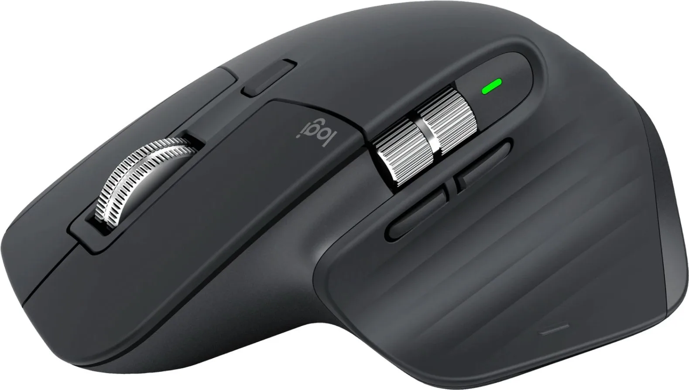

Несколько фактов
- Компания Logitech основана в 1981 году.
- Бренд выпускает устройства для компьютеров и игровых платформ.
- Устройства компании представлены в разных ценовых категориях.
Небольшой отзыв

Мне нравится, что у Logitech есть устройства для разных сценариев использования. При выборе мыши важно учитывать форму корпуса, способ подключения, вес и расположение дополнительных кнопок. Одна модель не обязательно подойдёт всем, поэтому перед покупкой стоит сравнить характеристики.Интерактивные возможности
Изменить цвет фона:
Часы обновляются в заголовке вкладки браузера каждую секунду.